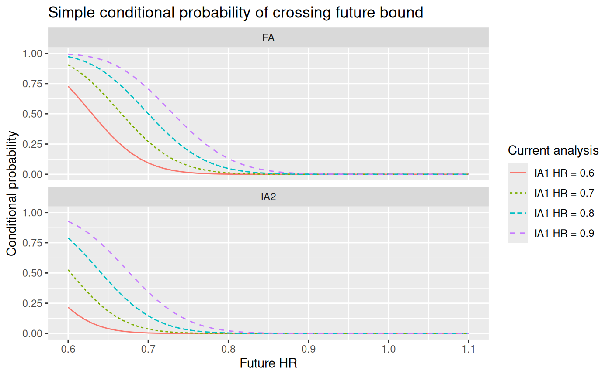
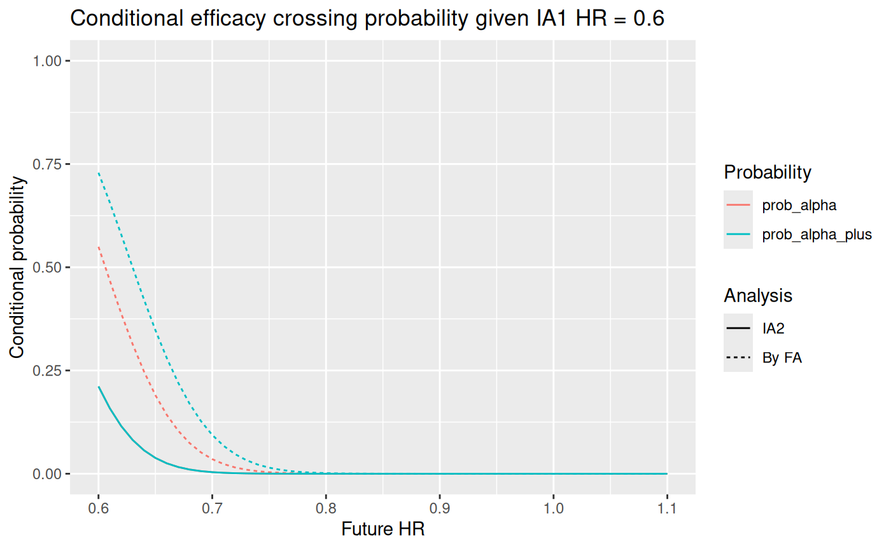
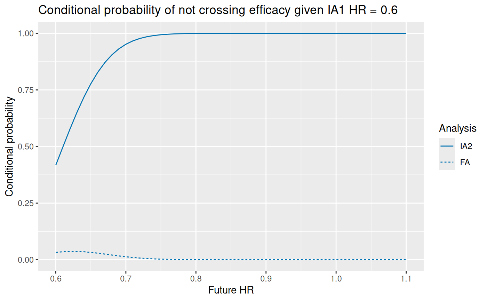

Conditional power
Yujie Zhao, Shiyu Zhang, and Keaven M. Anderson
Source:vignettes/articles/story-cp.Rmd
story-cp.RmdIntroduction
We provide a simple plot of conditional power at the time of interim analysis. The conditional power evaluations can be useful supportive information for boundaries determined by other methods.
Design
We consider the default design from gs_design_ahr(). We
assume enrollment will ramp-up with 25%, 50%, and 75% of the final
enrollment rate for consecutive 2 month periods followed by a steady
state 100% enrollment for another 6 months. The rates will be increased
later to power the design appropriately. However, the fixed enrollment
rate periods and relative enrollment rates will remain unchanged.
For the control group, we assume an exponential failure rate distribution with a 12 month median. We assume a hazard ratio of 1 for 4 months, followed by a hazard ratio of 0.6 thereafter. Finally, we assume a 0.001 exponential dropout rate per month for both treatment groups.
Here we implement the asymmetric 2-sided design. We will add an early futility analysis where if there is a nominal 1-sided p-value of 0.05 in the wrong direction. This might be considered a disaster check. After this point in time, there may be no perceived need for further futility analysis. For efficacy, we use alpha-spending approach with the Lan-DeMets spending function to approximate O’Brien-Fleming bounds with one-sided Type I error \(\alpha = 0.025\).
enroll_rate <- define_enroll_rate(
duration = c(2, 2, 2, 6),
rate = (1:4) / 4)
fail_rate <- define_fail_rate(
duration = c(4, Inf),
fail_rate = log(2) / 12,
hr = c(1, .6),
dropout_rate = .001)
x <- gs_design_ahr(
alpha = 0.025,
beta = 0.15,
enroll_rate = enroll_rate,
fail_rate = fail_rate,
analysis_time = c(16, 26, 36),
upper = gs_spending_bound,
upar = list(sf = sfLDOF, total_spend = 0.025),
test_upper = c(TRUE, TRUE, TRUE),
lower = gs_spending_bound,
lpar = list(sf = sfHSD, total_spend = 0.15, param = 3)) |> to_integer()
# Round analysis time to nearest month
x$analysis$time <- round(x$analysis$time)
x |> gs_bound_summary() |> lt()Update design at time of interim analysis
Assume there are 145 instead of the planned 192 events at the first IA. Assume further there are 90 events observed within 4 months of subject randomization, and 55 events more than 4 months after randomization. The IA1 blinded estimate of minus the average log hazard ratio (-log(AHR)) based on the original assumptions of HR = 1 for 4 months and 0.6 thereafter is computed as follows:
For IA alpha spending, we take the minimum of planned and actual information fraction, allocating remaining \(\alpha\) to the FA. Note that in the following, the calendar time of analysis is assumed to be the same as in the planned design. Also, the effect size and event counts at analyses after IA1 are assumed the same as at the time of design unless otherwise specified by the user. Just as an example, we assume the actual timing of IA1 is at 17 months after study start. We update the design bounds as follows:
ustime <- x$analysis$info_frac
ustime[1] <- min(145, x$analysis$event[1]) / max(x$analysis$event)
xu <- gs_update_ahr(
x = x,
ustime = ustime,
event_tbl = data.frame(analysis = c(1, 1), event = c(90, 55)))
xu$analysis$time <- c(17, x$analysis$time[2:3])
xu |> gs_bound_summary() |> lt()Testing and simple conditional power
We assume possible IA1 observed HR values of 0.6, 0.7, 0.8, and 0.9.
We compute the conditional power at IA2 and FA given the IA1 observed HR
and observed blinded events. The function gsDesign::hrn2z()
translates a hazard ratio and number of events into an approximate
corresponding Z-value, using the Schoenfeld approximation.
We demonstrate a conditional power plot that may be of some use. The simple conditional power ignores future interim bounds and targets the probability of crossing the final efficacy bound given the IA1 Z-value. Assuming a future HR between IA1 and FA from 0.6 to 1.1, we translate the HR to natural treatment effect parameter as shown below.
For each combination of future HR and currently observed HR, we
calculate the simple conditional power via the
gs_cp_simple() function for both IA2 and the final
analysis.
ia2_cp <- NULL
fa_cp <- NULL
# calculate IA2 and FA conditional power/error
for (i in seq_along(future_theta)) {
for (j in seq_along(ia1_z)) {
cp <- gs_cp_simple(
x = xu,
theta = c(ia1_theta, future_theta[i], future_theta[i]),
i = 1,
zi = ia1_z[j]
)
# calculate IA2 conditional power
ia2_cp_new <- tibble(future_analysis = "IA2",
future_hr = future_hr[i],
current_hr = paste0("IA1 HR = ", ia1_hr[j]),
cond_prob = cp[1])
# calculate FA conditional power
fa_cp_new <- tibble(future_analysis = "FA",
future_hr = future_hr[i],
current_hr = paste0("IA1 HR = ", ia1_hr[j]),
cond_prob = cp[2])
ia2_cp <- rbind(ia2_cp, ia2_cp_new)
fa_cp <- rbind(fa_cp, fa_cp_new)
}
}The panels show the simple conditional probability of crossing the future efficacy bound at FA and IA2, separately. Within each panel, curves correspond to different observed IA1 HR values.
# plot the simple conditional power
ggplot(
data = rbind(ia2_cp, fa_cp),
aes(
x = future_hr,
y = cond_prob,
color = current_hr,
linetype = current_hr
)
) +
geom_line() +
facet_wrap(~ future_analysis, ncol = 1) +
coord_cartesian(ylim = c(0, 1)) +
ggtitle("Simple conditional probability of crossing future bound") +
xlab("Future HR") +
ylab("Conditional probability") +
labs(color = "Current analysis", linetype = "Current analysis")
Assumptions used to plot the above conditional power
- We assume there are 145 observed at IA1, with 90 events observed during the first 4 months since randomization when HR = 1, and 55 events after month 4 when HR = 0.6.
- Based on the above assumed blinded event, the IA1 blinded treatment
effect is estimated by
-sum(log(c(1, 0.6)) * c(90, 55)) / 145, and the IA1 statistical information is estimated as 145/4. - The statistical information of future analysis is under the null hypothesis, i.e., event/4 for equal randomization.
- Given the IA1 observed HR, the IA1 Z-score is calculated using the Schoenfeld approximation.
- Conditional power for future analyses ignores intervening interim analyses.
Conditional power accounting for future interim analyses
The simple conditional power above calculates the probability of crossing a future bound at each analysis separately. It does not account for the possibility that the trial may cross a futility or efficacy bound earlier at an intervening interim analysis.
The function gs_cp() accounts for future interim
analyses by calculating path probabilities conditional on the current
Z-value.
In this example,
For prob_alpha:
-
prob_alpha[1]is the conditional probability of crossing the efficacy bound at IA2. -
prob_alpha[2]is the conditional probability of staying between the IA2 futility and efficacy bounds, then crossing the efficacy bound at FA. -
sum(prob_alpha)is the cumulative conditional probability of crossing an efficacy bound by FA, accounting for future futility and efficacy bound crossings.
For prob_alpha_plus:
-
prob_alpha_plus[1]is the conditional probability of crossing the efficacy bound at IA2. -
prob_alpha_plus[2]is the conditional probability of not crossing the IA2 efficacy bound, then crossing the efficacy bound at FA. Unlikeprob_alpha[2], this does not require the IA2 Z-value to stay above the futility bound. -
sum(prob_alpha_plus)is the cumulative conditional probability of crossing an efficacy bound by FA when future futility bounds are ignored.
For prob_beta:
-
prob_beta[1]is the conditional probability of not crossing the efficacy bound at IA2. -
prob_beta[2]is the conditional probability of staying between the IA2 futility and efficacy bounds, then not crossing the efficacy bound at FA.
We calculate these quantities for the same IA1 observed HR values used above, then plot the case with IA1 HR = 0.6 as an example.
gs_cp_tbl <- NULL
for (i in seq_along(future_theta)) {
for (j in seq_along(ia1_z)) {
cp <- gs_cp(
x = xu,
theta = c(ia1_theta, future_theta[i], future_theta[i]),
i = 1,
zi = ia1_z[j]
)
cp_new <- tibble(
probability_type = c(rep("prob_alpha", 3),
rep("prob_alpha_plus", 3),
rep("prob_beta", 2)),
future_analysis = c(rep(c("IA2", "FA", "By FA"), 2),
"IA2", "FA"),
future_hr = future_hr[i],
current_hr = paste0("IA1 HR = ", ia1_hr[j]),
cond_prob = c(
cp$prob_alpha[1],
cp$prob_alpha[2],
sum(cp$prob_alpha),
cp$prob_alpha_plus[1],
cp$prob_alpha_plus[2],
sum(cp$prob_alpha_plus),
cp$prob_beta[1],
cp$prob_beta[2]
)
)
gs_cp_tbl <- rbind(gs_cp_tbl, cp_new)
}
}
gs_cp_tbl$future_analysis <- factor(
gs_cp_tbl$future_analysis,
levels = c("IA2", "FA", "By FA")
)
gs_cp_tbl$probability_type <- factor(
gs_cp_tbl$probability_type,
levels = c("prob_alpha", "prob_alpha_plus", "prob_beta")
)To summarize the efficacy-crossing probabilities, we focus on
prob_alpha and prob_alpha_plus. For each
quantity, the IA2 curve gives the conditional probability of crossing
the efficacy bound at IA2, while the by-FA curve gives the cumulative
conditional probability of crossing an efficacy bound by FA.
The difference between prob_alpha and
prob_alpha_plus reflects the role of future futility
bounds. prob_alpha requires the trial to remain between the
futility and efficacy bounds at any intervening analysis before crossing
efficacy, whereas prob_alpha_plus ignores future futility
bounds and only requires no earlier efficacy crossing. In this design,
the two curves are close because the future futility bound has little
impact on the efficacy-crossing probability for the illustrated
case.
gs_cp_plot_tbl <- subset(gs_cp_tbl, current_hr == "IA1 HR = 0.6")
efficacy_plot_tbl <- subset(
gs_cp_plot_tbl,
probability_type %in% c("prob_alpha", "prob_alpha_plus") &
future_analysis %in% c("IA2", "By FA")
)
efficacy_plot_tbl <- droplevels(efficacy_plot_tbl)
ggplot(
data = efficacy_plot_tbl,
aes(
x = future_hr,
y = cond_prob,
color = probability_type,
linetype = future_analysis
)
) +
geom_line() +
coord_cartesian(ylim = c(0, 1)) +
ggtitle("Conditional efficacy crossing probability given IA1 HR = 0.6") +
xlab("Future HR") +
ylab("Conditional probability") +
labs(color = "Probability", linetype = "Analysis")
We next show prob_beta, which is interpreted analysis by
analysis. Here prob_beta[1] is the conditional probability
of not crossing the efficacy bound at IA2, and prob_beta[2]
is the conditional probability of staying between the IA2 futility and
efficacy bounds, then not crossing the efficacy bound at FA.
gs_cp_plot_tbl <- subset(gs_cp_tbl, current_hr == "IA1 HR = 0.6")
beta_plot_tbl <- subset(
gs_cp_plot_tbl,
probability_type == "prob_beta" &
future_analysis %in% c("IA2", "FA")
)
beta_plot_tbl <- droplevels(beta_plot_tbl)
ggplot(
data = beta_plot_tbl,
aes(
x = future_hr,
y = cond_prob,
linetype = future_analysis
)
) +
geom_line(color = "#0072B2") +
coord_cartesian(ylim = c(0, 1)) +
ggtitle("Conditional probability of not crossing efficacy given IA1 HR = 0.6") +
xlab("Future HR") +
ylab("Conditional probability") +
labs(linetype = "Analysis")